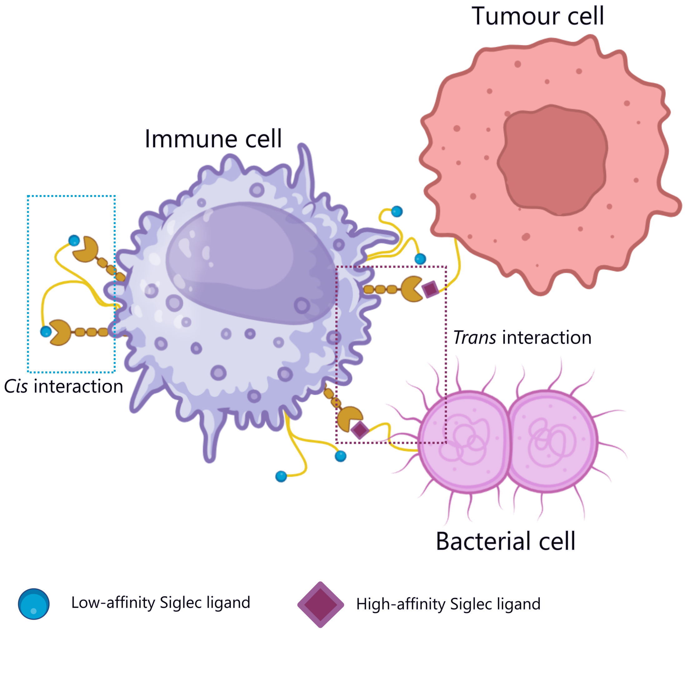

Core Research Projects

Targeting N. gonorrhoeae
Workflow ibrido NMR/MD per lo sviluppo di mimitopi vaccinali (Tetra-1).
Vedi Risultati Tecnici →
Siglec-7 & Immuno-Oncology
Studio atomistico del "Glycan Checkpoint" per contrastare l'evasione immunitaria.
Esplora Meccanismo →